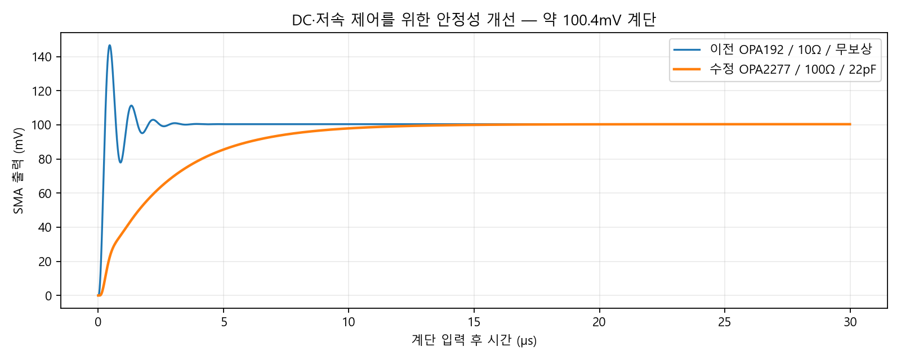
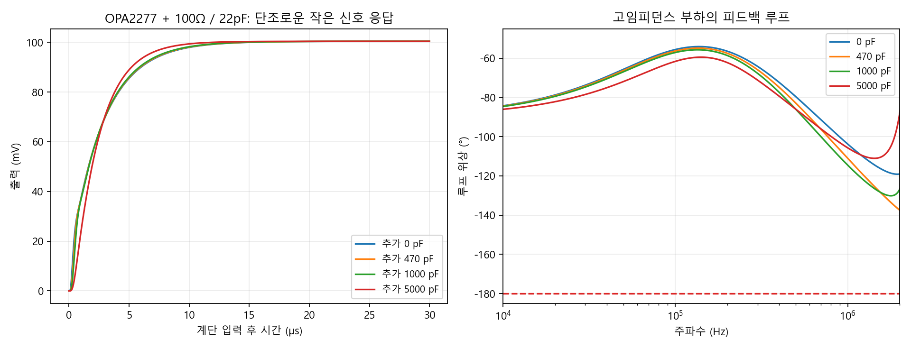

2026-10-12 · 5V 외부 입력 유지 · OPA2277UA 듀얼 · ngspice 47 / TI OPAx277 Final 1.4
U4의 A/B 두 증폭기로 기존 U4/U5 두 OPA192를 통합했습니다. R16/R21은 10Ω에서 100Ω, 1%로 바꾸고 C25/C26 22pF, C0G/NP0, 50V, 5%를 추가했습니다. C22/C23의 출력 100pF는 유지했습니다.
저주파·DC에서는 R15/R20 100kΩ가 100Ω 뒤의 SMA 접점을 감지합니다. 100Ω 전압강하를 포함해 DC 출력값을 보정합니다. 고주파에서는 C25/C26이 100Ω 앞의 증폭기 출력 → 반전 입력으로 직접 피드백을 제공합니다. 케이블 용량은 100Ω로 분리하면서 DC 정확도를 유지하는 이중 피드백입니다. 단순 입력 필터만 넣어 발진을 가리는 방식이 아닙니다. 의도적으로 대역폭을 낮추는 대가가 있어 DC·저속 제어에 적합합니다.
공칭 DC 전달식: Vout = (100k / 24.9k) × (Vdac − 2.5V). R12/R14/R17/R19 24.9kΩ, R13/R15/R18/R20 100kΩ, 0.1%는 유지했습니다. 유한 입력 바이어스 전류가 있는 OPA2277에는 저항 정합과 청결한 입력 주변 배치가 중요합니다.

1MΩ 공칭 출력: −10.04016V ~ +10.04014V. 10kΩ·100kΩ에서도 공칭 ±10V 범위를 확인했습니다. 이상적인 DAC의 0~5V를 가정한 증폭기 결과로, 실제 DAC 최고 코드·5V LDO 오차·출력 버퍼의 레일 근처 오차는 별도입니다. 약 100.4mV 작은 신호 계단을 시험했습니다. 아래는 공칭 부품값이며 공차 시험까지 포함한 전체 최소 위상 여유는 79.7°입니다.
| 부하 | 추가 용량 | 위상 여유 | 오버슈트 | 1% 정착 |
|---|---|---|---|---|
| 1000 kΩ | 0 pF | 85.9° | 0.0000% | 12.45 µs |
| 1000 kΩ | 100 pF | 84.8° | 0.0000% | 12.42 µs |
| 1000 kΩ | 470 pF | 81.6° | 0.0000% | 12.27 µs |
| 1000 kΩ | 1000 pF | 80.1° | 0.0000% | 12.06 µs |
| 1000 kΩ | 5000 pF | 90.5° | 0.0000% | 10.05 µs |
| 100 kΩ | 0 pF | 85.9° | 0.0000% | 12.47 µs |
| 100 kΩ | 100 pF | 84.8° | 0.0000% | 12.43 µs |
| 100 kΩ | 470 pF | 81.6° | 0.0000% | 12.28 µs |
| 100 kΩ | 1000 pF | 80.1° | 0.0000% | 12.06 µs |
| 100 kΩ | 5000 pF | 90.5° | 0.0000% | 10.07 µs |
| 10 kΩ | 0 pF | 86.1° | 0.0000% | 12.58 µs |
| 10 kΩ | 100 pF | 85.0° | 0.0000% | 12.54 µs |
| 10 kΩ | 470 pF | 81.9° | 0.0000% | 12.41 µs |
| 10 kΩ | 1000 pF | 80.3° | 0.0000% | 12.19 µs |
| 10 kΩ | 5000 pF | 90.5° | 0.0000% | 10.21 µs |

출력 약 −9.84V와 +9.74V의 바이어스, RISO 99/101Ω 및 CF 20.9/23.1pF의 조합, 추가 용량 0/470/5000pF를 검사했습니다. 5nF에서 0→−10.04→+10.04V의 느린 전체 범위 램프도 검사했습니다. 양의 바이어스에서 초기 정지 동작점 수렴이 실패한 과도 시험은 제외하고, 0V에서 바이어스로 램프 이동 후 작은 신호를 넣는 방식으로 재검사했습니다. 비현실적 동작점이나 중단된 계산을 통과로 집계하지 않았습니다.
TPS65131: PGND 2/3번, AGND 19번 및 EP 25번은 GND입니다. INN 5/6번은 GND가 아니라 VIN_RAW 5V 입력입니다. INP 1/24번은 승압 스위칭 노드입니다. DAC8562 GND 3번과 VREFIN/VREFOUT 10번의 잘못 바뀐 연결도 수정했습니다. DAC→출력단은 DACA/DACB 넷포트 두 쌍으로 분리하고 그 외 기능 블록의 일반 신호 배선은 와이어를 유지했습니다.
LP2985-50: C13 입력 4.7µF, C15 출력 4.7µF, C14 BYP 10nF를 유지했습니다. 이미지의 BYP 30pF는 권장 잡음 저감 값과 다르므로 채택하지 않았습니다. 이미지의 10µF 두 개를 단순히 추가할 필요는 없습니다. 구형 LP2985의 출력 안정성 조건을 고려하여 공차·DC 바이어스를 적용한 유효 C15가 2.2µF 이상이고 데이터시트 ESR 범위를 만족하는지 부품 선정/실물에서 확인해야 합니다. 최신 LP2985는 출력 용량 1µF 이상을 지원하지만, 실제 주문 소자 리비전을 모르는 상태에서 그 조건만 적용하지 않습니다.
PCB는 90×60mm, M3용 비도금 Ø3.2mm 홀 4개를 (5,5), (85,5), (5,55), (85,55)mm에 대칭 배치했습니다. 각 홀 주변은 Ø7mm 구리·부품 금지 영역입니다. J1을 보드 아래쪽으로 옮겼고, 듀얼 증폭기 주변에 고주파 피드백 커패시터와 전원 디커플링 부품을 배치했습니다. 최종 PCB DRC/넷리스트 검증 결과는 별도 검증 JSON을 참조하십시오.
레이저 장비를 연결하기 전에 더미 고임피던스 부하와 실제 케이블로 ±12V 레일, 5V LDO, 기준전압, DC 보정, 계단 응답, 전원 투입·차단 과도를 측정해야 합니다. 수학적 최대 범위는 ±10.04V라 장비 입력 제한이 ±10.00V이면 펌웨어에서 제한·보정해야 합니다. 초기 시험에는 ±9.5V와 느린 램프를 권장합니다. DAC 전원 투입 기본 코드/기준전압 상태에 따라 음의 출력이 나타날 수 있으므로 레이저에 직접 연결한 기동 시험은 피하십시오.
전원은 공칭 +11.97231V/−12.13V의 이상적인 레일로 두었습니다. TPS65131/LP2985의 스위칭 리플·전원 기동, DAC 자체 모델·INL/글리치, 실제 케이블 전송선·PCB 기생 성분, 온도/전 저항 공차/자체 발열은 모델에 포함하지 않았습니다. 특히 ±10V 범위는 공칭 증폭기 모델 결과이며 실제 부품 전체의 최악 조건 보증이 아닙니다.
전체 수치와 조건 · 수정 회로도 넷리스트 · 재현 시뮬레이션 스크립트 · 공칭 시험 목록 · 공차·바이어스 시험 목록
프로젝트 폴더에서 node simulation/highz-stability.mjs verify dfb_100_22, node simulation/highz-stability.mjs corners, python simulation/analyze-highz.py verify, python simulation/analyze-highz.py corners, python simulation/highz-report.py로 재현합니다. ngspice 실행 파일은 기본 tmp 경로 또는 환경변수 NGSPICE_BIN으로 지정합니다. numpy/matplotlib와 ngspice PSpice 호환 설정이 필요합니다.
출처: TI OPA2277 / 공식 모델 · TI RISO+이중 피드백 설명 · TPS65131 데이터시트 · LP2985 데이터시트 · DAC8562 데이터시트